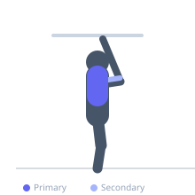

Exercise guide / Single-Arm Lat Pulldown
Single-Arm Lat Pulldown
The single-arm lat pulldown trains each side of the back independently, allowing greater range of motion through freedom of lateral trunk flexion and improved scapular movement. It is particularly useful for identifying and correcting left-to-right strength imbalances in the latissimus dorsi and is an effective finishing exercise after bilateral pulldowns.
Primary muscles
latissimus dorsi
Secondary muscles
biceps brachii long head
teres major
rhomboid major
Stabilizers
internal oblique
transverse abdominis
Equipment
Lat Pulldown Machine
Optional
Cable Machine (High Pulley)


Starting position
- Attach a single D-handle to a lat pulldown machine or high pulley. Sit or kneel facing the machine and grasp the handle with one hand, arm fully extended overhead.
Setup
- Attach a D-handle to the high pulley. Sit at the machine or kneel on the floor. Set an appropriate weight — typically less than half the bilateral pulldown weight.
Steps
- Step 1: Begin with the working arm fully extended, lat on stretch, allowing a slight lateral lean away from the cable.
- Step 2: Depress the shoulder blade of the working side and initiate the pull.
- Step 3: Drive the elbow down and toward the hip, pulling the handle to the upper chest or shoulder.
- Step 4: Squeeze the lat hard at the bottom and pause briefly.
- Step 5: Return under control to full extension, letting the lat fully lengthen.
Coaching cues
- Imagine trying to put the handle in your front pocket
- Let your shoulder reach for the ceiling at the top — full stretch
- Drive the elbow, not the hand
Breathing
- Exhale as you pull down. Inhale as you return to start.
Range of motion
- Full overhead extension to handle at chest/shoulder level. Allow natural lateral trunk movement.
Tempo
- 2-1-3-0 (slow eccentric to maximize lat stretch)
Common mistakes
- Rotating the torso excessively rather than isolating the lat
- Using the hand and grip rather than the elbow to initiate the pull
- Rushing through the eccentric phase
Safety
- Keep the core engaged to prevent excessive lateral trunk flexion that shifts load to the spine
Training
- hypertrophy: 10–15 reps
- endurance: 15–20 reps
- hypertrophy: 3–4 sets
- endurance: 2–3 sets
- Rest: {'hypertrophy': 60, 'endurance': 30}